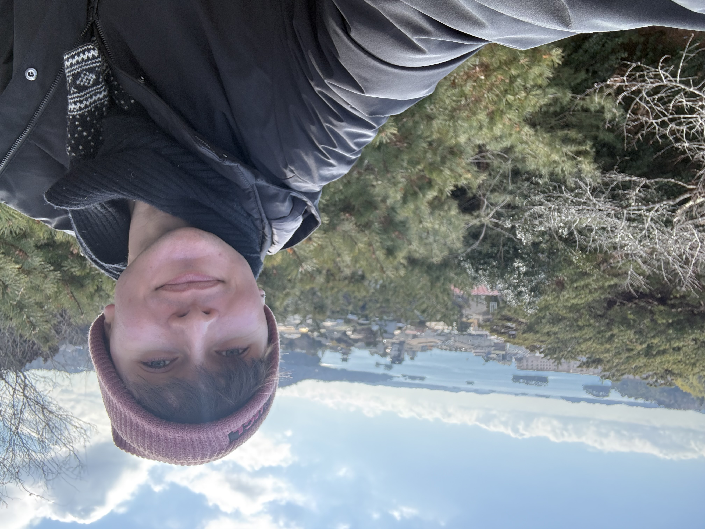
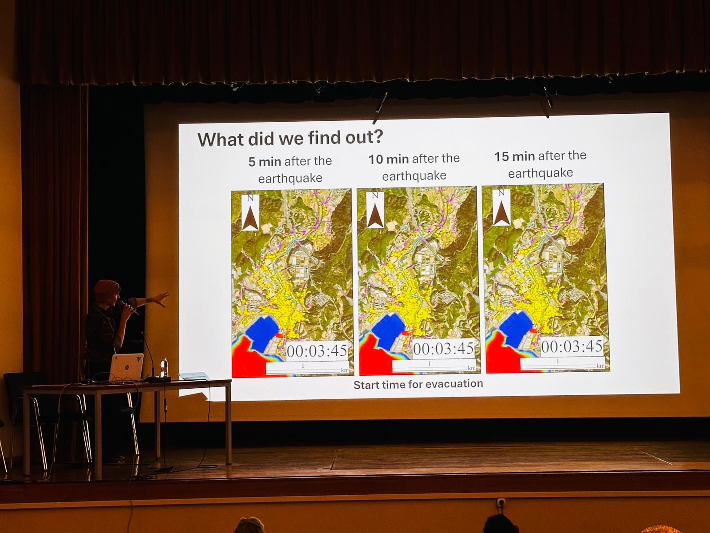
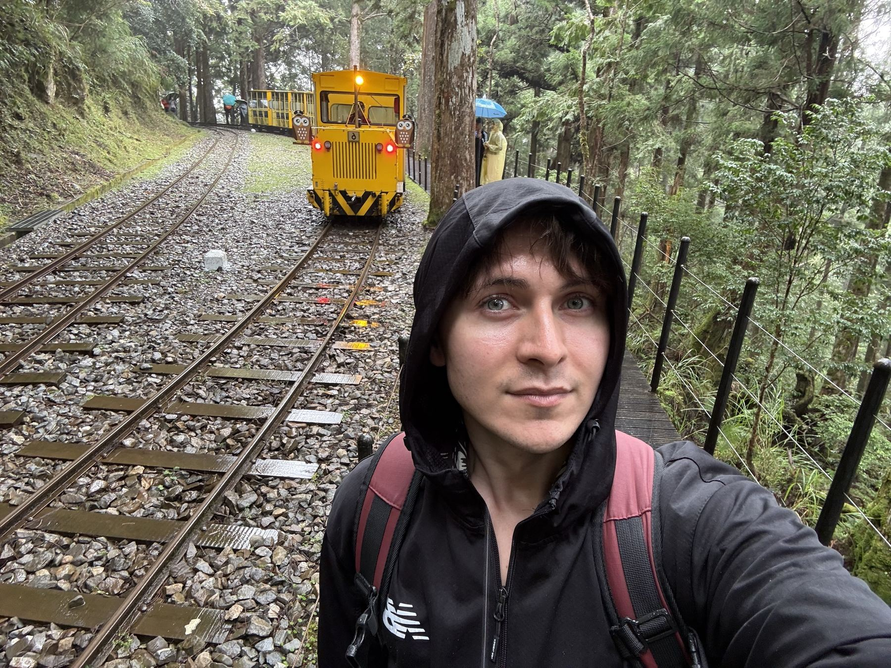
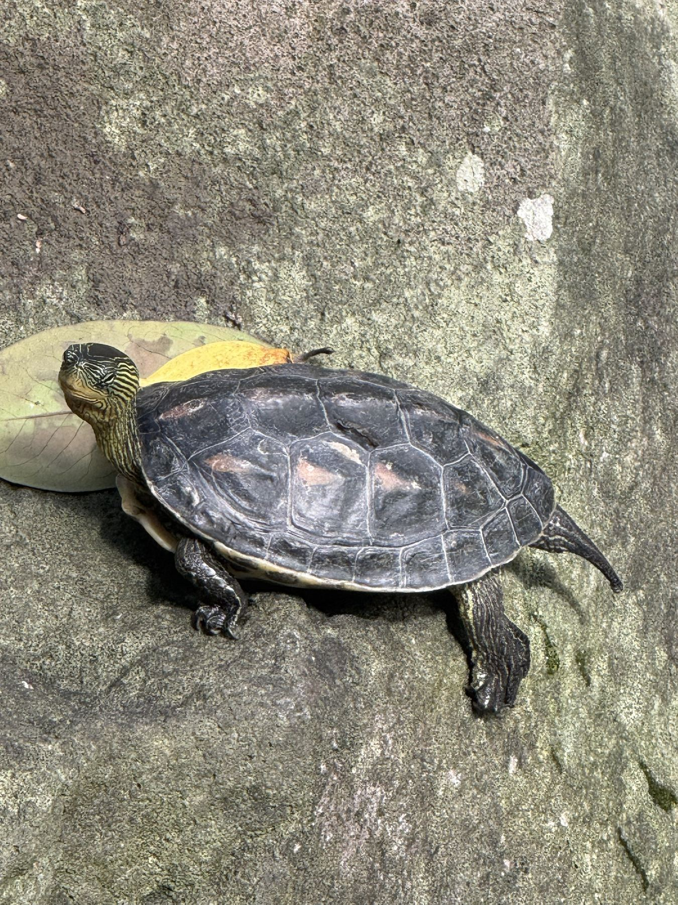

35.01°N 135.77°E
35.01°N 135.77°EKyoto
Japan
River systems, traditional ecological knowledge and the culture of disaster memory in Japan's old capital.

Disaster scientist at UCL, a global top 10 university
Using nature-based solutions to build resilience, helping people learn the power of living systems.
I go where floods and typhoons hit, to find out how nature keeps people safe, and how people learn to let it.
PhD (UCL, in progress), MSc, BSc (Hons), FRGS, AFHEA
Disaster scientist and applied researcher. London, Warsaw, Kyoto.
Move your cursor to light the way.Tap the sky to move the light.

The framework at the heart of my PhD, built from interviews in two flood-prone cities: Glasgow and Kyoto.
Trees, wetlands and rain gardens can protect a city from floods. But they only work if people understand them, value them and make room for them.
Green Learning maps how that understanding forms. I talk with residents, teachers, emergency services and policymakers about the nature around them, the floods they have lived through and where they learned what they know.
Their stories are woven into a place testimony: a portrait of how a whole city knows, feels and learns about risk and nature.
Comparative fieldwork across the UK, Japan and Taiwan, places with very different relationships to water, nature and disaster.
35.01°N 135.77°EJapan
River systems, traditional ecological knowledge and the culture of disaster memory in Japan's old capital.
 56.21°N 4.81°W
56.21°N 4.81°WScotland
Urban flooding, green infrastructure and community learning, tracing water from the Arrochar Alps down to the city.
 38.37°N 141.06°E
38.37°N 141.06°EJapan
Coastal water systems and the pine islands that act as natural barriers to storms and tsunamis.
Published in Disaster Prevention and Management.
Read the paper The ConversationHow nature can help protect the capital.
Read the article Talk, 2026Young Scientist Session, 16th IDRiM Conference, Bali.
See all talksFrom the students I've taught and the researchers I've worked alongside.
It was one of the most engaging learning experiences I've had.
His enthusiasm for the subject was genuine and infectious, and every session reflected real preparation and care.
Research requires not only a sharp mind but also well-developed skills, both of which Maciej possesses.
A truly exceptional researcher with an exciting future and real potential to enact positive change.
Conferences, classrooms, festivals and a lot of rivers.







Where the path leads next: new collaborations across East Asia, the next chapter after the PhD, and a book of my own.
Building research links through an international science exchange.
A three-month stay in Taiwan studying how university students see nature-based solutions.
Comparing nature-based disaster resilience across different Asian contexts of governance and risk, at the Disaster Prevention Research Institute.
Part truth, part fiction: fighting chronic illness while building a science career in a world that feels like a dystopia. In discussion with publishers. Read more
Tap a page to explore the rest of my work.
I'm open to research collaborations, consultancy, mentoring, talks and media on nature-based resilience and disaster education.